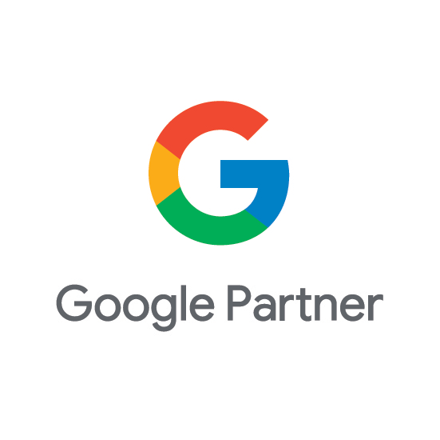
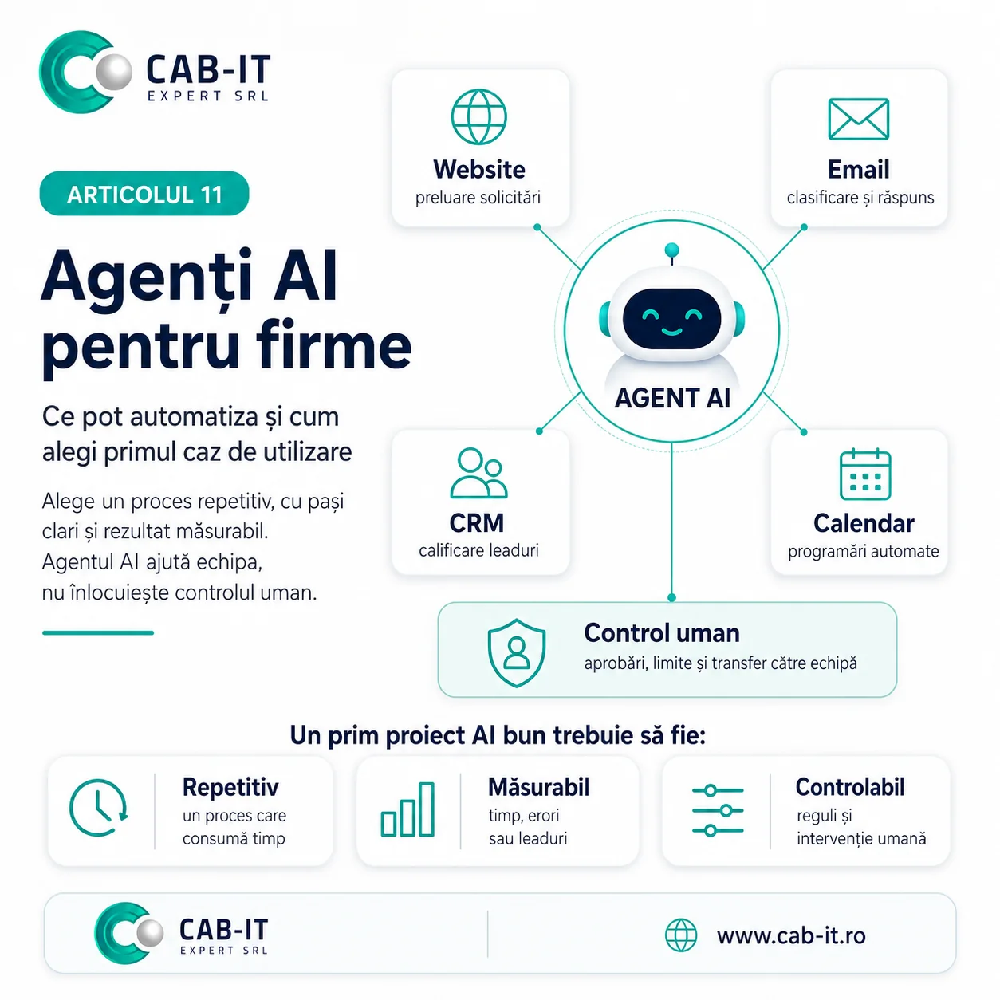
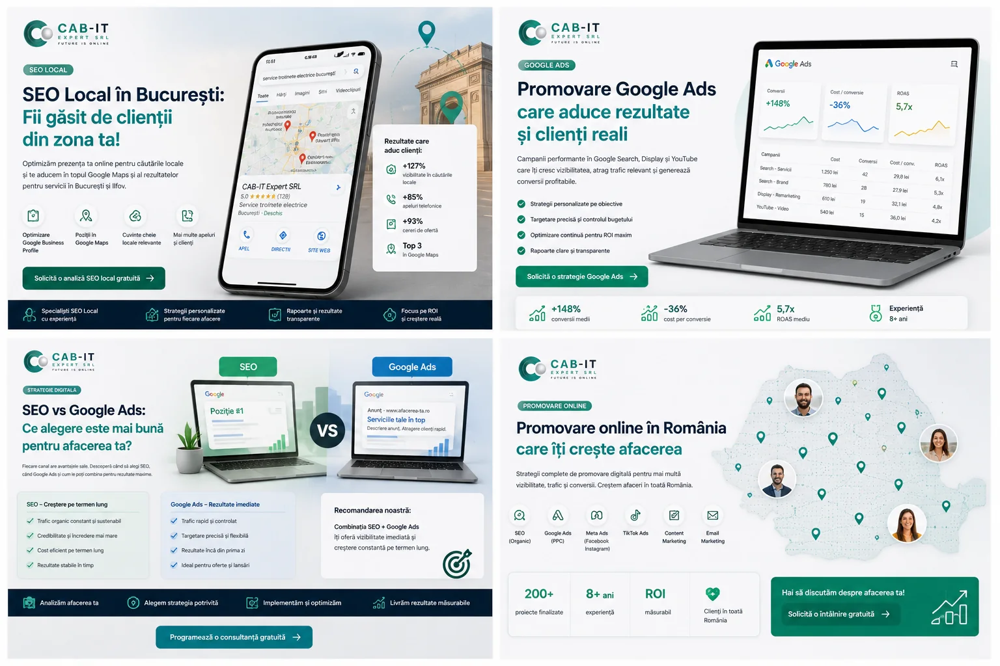
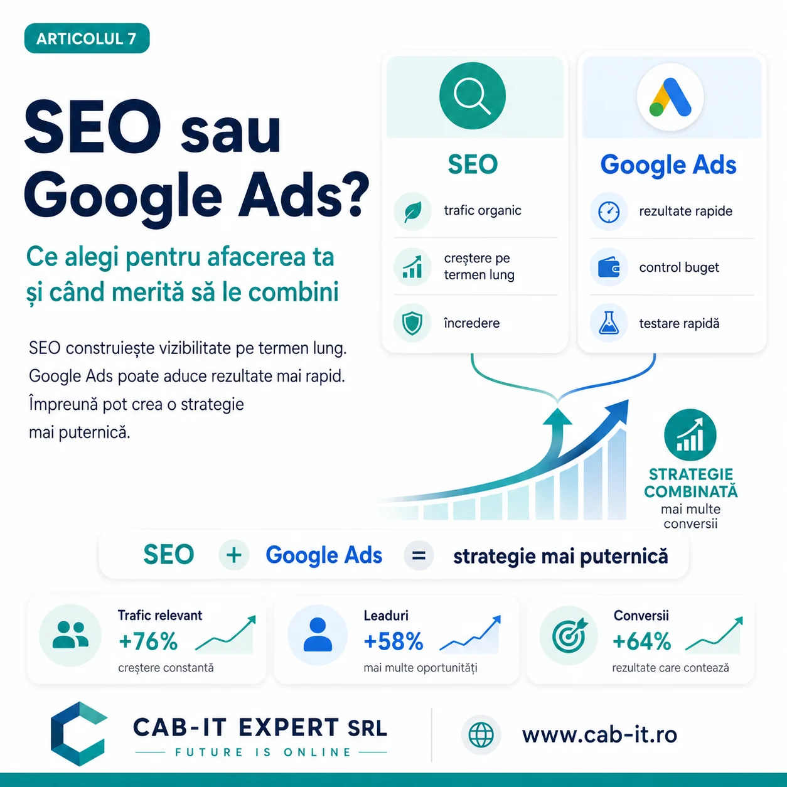

Agenție digitală din București
Transformăm
24hSite de prezentaregata chiar într-o zi
3–7 zileMagazin onlineîn funcție de complexitate
Transformăm
prezența online în
clienți reali.
Creăm website-uri, strategii SEO și campanii de promovare online care aduc vizibilitate, încredere și rezultate măsurabile.
Peste 120 de afaceri
au crescut alături de noi
Google
Afacerea taWebsite optimizat | Experiență | Rezultate
★★★★★ 5.0 (120) Recomandat
Tot ce are nevoie afacerea ta pentru a crește online
Website-uriSite de prezentare chiar în 24h; magazin online în 3–7 zile.
→
SEOTe ajutăm să fii găsit atunci când clienții caută.
→
Google AdsCampanii care aduc clienți, nu doar clickuri.
→
Social Media AdsConținut și reclame care conectează și vând.
→
Automatizări AISoluții inteligente care economisesc timp și bani.
→
Realizat de un specialist100% GRATUIT
Primește auditul complet în maximum 30 de minute
Introdu website-ul și adresa ta de email. Verificăm manual viteza, mobilul, SEO tehnic, mesajul, securitatea și elementele de conversie.
- Viteză
- SEO tehnic
- Mobil
- Conversii
Timp maxim de livrare30 minAudit complet, direct pe email100% gratuit
De ce să lucrezi cu noi?
- Strategii personalizate pentru fiecare afacere
- Transparență și comunicare constantă
- Rezultate măsurabile, nu promisiuni
- Tehnologii moderne și soluții scalabile
- Suport rapid și parteneriat pe termen lung
Proiect recentVezi toate proiectele →

E-commerce
Maison Bébé
Studiu de caz Maison Bébé: website e-commerce modern și elegant pentru un boutique premium dedicat bebelușilor, realizat de CAB-IT Expert.
Vezi studiul de caz →120+Clienți mulțumiți
200+Proiecte finalizate
8+Ani de experiență
5.0Rating pe Google
Ai o idee? Hai să o transformăm într-un proiect care produce rezultate.Hai să discutăm →

Partener Google
Vezi serviciile Google Ads
CAB-IT Expert este Google Partner
Construim și administrăm campanii Google Ads cu structură clară, măsurare corectă și optimizare continuă, conectate la obiectivele reale ale afacerii.
Promovare online · București și România
Construim soluții digitale pe care oamenii le înțeleg și afacerile le pot măsura.
CAB-IT Expert face promovare online simplu de înțeles și creare de website-uri simplu de administrat. Combinăm dezvoltarea web, SEO, publicitatea plătită și automatizările într-un plan adaptat afacerii tale, cu obiective și indicatori clari.
Creare website în București
Site-uri de prezentare, magazine online și dezvoltări personalizate, rapide și ușor de administrat.
Descoperă serviciul →Promovare online pentru firme
Google Ads, Meta Ads și TikTok Ads conectate la landing pages, tracking și obiective comerciale.
Vezi promovarea online →SEO și vizibilitate locală
Structură tehnică, conținut și optimizare locală pentru căutările care contează în București și în țară.
Vezi serviciile SEO →Servicii digitale complete
De la prima căutare la clientul care revine
Construim componentele care susțin creșterea și le conectăm într-un sistem coerent.
Website-uri
Site-uri de prezentare gata chiar în 24 de ore și magazine online finalizate în 3–7 zile, în funcție de complexitate.
Creare website →#1
website-concurent.roServicii web București
#2
agenție-digitală.roCreare site profesional
#3
#17CAB-IT Expertcab-it.ro · Website optimizat
↑14Optimizare SEO
Te ajutăm să fii găsit atunci când potențialii clienți caută serviciile tale.
Servicii SEO →Google Ads
Campanii concentrate pe cereri, apeluri și vânzări, nu doar pe clickuri.
Promovare plătită →FacebookAds
InstagramAds
TikTokAds
Promovare social media
Conținut și reclame create pentru publicul potrivit, pe canalele potrivite.
Social media →Asistent CAB-ITonline acum
Soluții AI
Automatizăm procese repetitive și construim agenți adaptați afacerii tale.
Automatizări AI →Vânzări+38%
Ultimele 30 de zileTendință în creștere ↗
Optimizare conversii
Îmbunătățim traseul utilizatorului pentru mai multe solicitări din traficul existent.
Optimizare CRO →Proiecte CAB-IT
Probleme reale. Soluții construite clar.
Prezentăm ce am implementat și publicăm rezultate cantitative numai atunci când sunt validate.
Vezi toate proiecteleE-commerce
Maison Bébé
Studiu de caz Maison Bébé: website e-commerce modern și elegant pentru un boutique premium dedicat bebelușilor, realizat de CAB-IT Expert.
Vezi studiul de caz →
SEO și reclame plătite
Auto La Domiciliu
Studiu de caz Auto La Domiciliu: website de servicii, structură SEO și campanii plătite pentru solicitări de service și diagnoză auto la domiciliu.
Vezi studiul de caz →
Web design
Nanu Events
Studiu de caz Nanu Events: website de prezentare responsive, structură de conținut și design modern pentru servicii și proiecte din domeniul evenimentelor.
Vezi studiul de caz →
SEO și reclame plătite
Traffic Restaurant & Lounge
Studiu de caz Traffic Restaurant & Lounge: website, SEO local, Google Ads și campanii Meta conectate la rezervări și promovarea restaurantului.
Vezi studiul de caz →
Web design
Best TKD
Studiu de caz Best TKD: website responsive și panou de administrare personalizat pentru prezentarea programelor, activităților și informațiilor utile.
Vezi studiul de caz →
Web design
Spălătoria Ozana
Studiu de caz Spălătoria Ozana: website responsive și optimizare SEO locală pentru prezentarea serviciilor și vizibilitate în căutările din București.
Vezi studiul de caz →
E-commerce
Lael Fashion
Studiu de caz Lael Fashion: website e-commerce responsive, structură de produse, optimizare SEO și direcție de promovare pentru un brand de fashion.
Vezi studiul de caz →
SEO și reclame plătite
Bilka Sistem
Studiu de caz Bilka Sistem: audit SEO, optimizare tehnică și structurarea campaniilor Google Ads pentru vizibilitate și cereri măsurabile.
Vezi studiul de caz →Proces simplu și transparent
De la idee la un sistem care produce rezultate
- 01
Înțelegem afacerea
Analizăm obiectivele, clienții și concurența.
- 02
Construim strategia
Stabilim ce merită implementat și în ce ordine.
- 03
Implementăm
Dezvoltăm, testăm și optimizăm fiecare componentă.
- 04
Măsurăm și îmbunătățim
Urmărim datele și dezvoltăm soluția pe termen lung.
Clienți reali · experiențe reale
Ce spun afacerile cu care lucrăm
Website, SEO și promovare gestionate cu explicații clare, adaptare continuă și atenție la rezultate.
SO
Spălătoria OzanaWebsite · Facebook
G Google★★★★★
Site rapid și modern, plus interacțiune constantă cu clienții pe Facebook.
De când Cab-IT ne-a refăcut site-ul și ne administrează pagina de Facebook, am observat o diferență reală — site-ul se încarcă rapid și arată modern, iar pe Facebook avem constant interacțiune cu clienții. Echipa a fost prezentă la fiecare pas și a explicat clar ce fac și de ce. Recomand.
BS
Bilka SistemWebsite · SEO
G Google★★★★★
Website rapid, structură solidă și o strategie SEO construită pentru domeniul nostru.
Am apelat la Cab-IT pentru site nou și optimizare SEO, iar rezultatul a depășit ce ne așteptam. Site-ul e rapid și bine structurat, iar strategia de SEO a fost gândită pentru domeniul nostru, nu un șablon general. Comunicarea cu echipa a fost directă pe tot parcursul proiectului.
WL
Wlasof LogisticsWebsite · SEO
G Google★★★★★
Mai mult trafic relevant și mai multe cereri de ofertă, cu fiecare etapă explicată clar.
Cab-IT ne-a construit un site nou și a preluat partea de SEO pentru compania noastră de logistică. Diferența s-a văzut în câteva luni — mai mult trafic relevant și mai multe cereri de ofertă prin site. Au explicat clar fiecare etapă, nu doar au livrat un raport la final.
TP
Traffic PUBSEO · Reclame online
G Google★★★★★
Campanii adaptate continuu și mai multe rezervări venite direct din online.
Lucrăm cu Cab-IT pentru reclamele online și SEO ale restaurantului. Ce ne-a plăcut e că au adaptat campaniile pe măsură ce vedeau ce funcționează, nu au lăsat totul pe pilot automat. Avem mai multe rezervări venite direct din online față de acum un an.
AD
Auto La DomiciliuWebsite · SEO local
G Google★★★★★
Website simplu de folosit pe telefon și poziționare mai bună în Google.
Cab-IT ne-a ajutat cu site-ul și cu poziționarea în Google pentru serviciul nostru de reparații auto la domiciliu. Site-ul e simplu de folosit și se încarcă bine pe telefon, ceea ce contează mult pentru clienții care ne caută pe drum. Au fost disponibili ori de câte ori am avut nevoie de o modificare.
IA
Ioana AuraAdministrator Maison Bébé
G Google★★★★★
Website modern și elegant, adaptat atent identității premium Maison Bébé.
Am colaborat cu CAB-IT Expert pentru realizarea website-ului maison-bebe.ro și sunt foarte mulțumită de rezultat. Site-ul este modern, elegant, ușor de utilizat și adaptat foarte bine specificului brandului Maison Bébé. Comunicarea a fost promptă, cerințele mele au fost înțelese și implementate cu atenție, iar pe tot parcursul proiectului am primit sprijin și soluții potrivite. Recomand CAB-IT Expert pentru profesionalism, seriozitate și implicare.
Design cu scop
Un site nu trebuie doar să arate bine.Trebuie să lucreze pentruafacerea ta.
Prezență fără direcție
- Încărcare lentă
- Mesaj neclar
- Trafic fără conversii
- Greu de găsit în Google
Un instrument de creștere
- Rapid și adaptat mobilului
- Structură și mesaj clare
- Optimizat pentru căutări
- Orientat spre solicitări și vânzări
Puncte de pornire transparente
Planuri flexibile pentru creșterea afacerii tale
Prețurile afișate nu includ TVA. Oferta finală se stabilește după obiective și complexitate.
Vezi toate pachetele →Website de prezentare
de la 999 lei- Lansare chiar în 24 de ore*
- Design responsive modern
- Până la 5 pagini
- Structură SEO de bază
Website de vânzare
de la 1.799 lei- Lansare în maximum 3–7 zile*
- Până la 100 de produse
- Experiență de cumpărare clară
- Administrare inclusă
Google / Meta / TikTok Ads
de la 649 lei / lună- Strategie și configurare
- Optimizare continuă
- Rapoarte clare
- Obiective măsurabile
Întrebări frecvente
Promovare online și creare website: răspunsuri directe
Fără jargon inutil. Clarificăm punctele care contează înainte de începerea unui proiect.
01Ce include promovarea online pentru o firmă din București?
În funcție de obiective, poate include audit, strategie, SEO, Google Ads, Meta Ads, TikTok Ads, landing pages, tracking și raportare. Alegem canalele după public, ofertă și buget.
02Cât costă crearea unui website profesional?
Costul depinde de numărul de pagini, funcționalități, conținut, administrare și integrări. După o discuție scurtă primești o estimare clară, cu livrabile definite.
03Realizați website-uri și pentru firme din afara Bucureștiului?
Da. Lucrăm cu firme din București și din întreaga Românie, iar proiectul poate fi gestionat complet online.
04În cât timp poate fi lansat un website?
Un website de prezentare poate fi finalizat chiar în 24 de ore. Pentru un magazin online, termenul este de 3–7 zile maximum, în funcție de complexitate, funcționalități și disponibilitatea textelor, imaginilor și produselor.
Resurse CAB-IT
Ghiduri de marketing digital pentru decizii mai bune
Explicăm SEO, promovarea online și dezvoltarea web simplu și aplicat.
Vezi toate articolele
Automatizarea proceselor într-o firmă: de unde începi și ce merită integrat
Automatizarea eficientă elimină pașii repetitivi și transferul manual de date. Primul obiectiv este simplificarea procesului, nu adăugarea unei tehnologii noi.
Citește articolul
Agenți AI pentru firme: ce pot automatiza și cum alegi primul caz de utilizare
Un agent AI poate răspunde, căuta informații și executa pași definiți, dar trebuie conectat la date corecte și controlat prin reguli clare.
Citește articolul
Redesign website: 10 semne că site-ul firmei tale pierde clienți
Un site poate funcționa tehnic și totuși să piardă clienți. Aceste semne arată când designul, mesajul sau structura nu mai susțin afacerea.
Citește articolul
Administrare Facebook și Instagram pentru firme: ce trebuie să primești de la o agenție
Administrarea social media nu înseamnă doar publicarea unor imagini. O colaborare bună trebuie să lege conținutul de brand, public și obiective comerciale.
Citește articolul
Promovare online în România: cum alegi canalele potrivite fără să risipești bugetul
O strategie de promovare online nu începe cu alegerea platformei, ci cu publicul, oferta și acțiunea pe care vrei să o generezi.
Citește articolul
SEO sau Google Ads: ce alegi pentru afacerea ta și când merită să le combini
SEO construiește vizibilitate organică, iar Google Ads poate genera cerere mai rapid. Alegerea corectă depinde de obiective, buget și maturitatea website-ului.
Citește articolul
Sub un minut
Cu ce te putem ajuta?
Alege direcția proiectului, iar formularul îți arată doar ce este relevant. Răspundem cu pași clari, nu cu un mesaj generic.